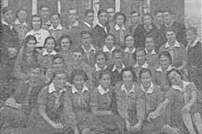
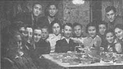

|
|||||||||||||||||||||||
THE GERMAN OCCUPATION - 4Liquidation of the Ghettos and the Deportations to the Camps (November 2, 1942—March 12, 1942) In late 1942, exactly a year after Grodno’s Jews had been herded into the ghettos, the Germans began making preparations for transporting them to the death camps. In the winter of 1942/1943, when the transports ceased elsewhere in Poland (in the Generalgouvernement and in the Warthegau), it was the turn of the Jews in the Bialystok District. There were about 130,000 Jews in 116 localities, including 35,000 in nineteen locales in the Grodno subdistrict. The officials responsible for the transports in the Grodno Subdistrict were Heinz Errelis, the chief of the Gestapo in the city, and his deputy, Erich Schott. To ensure that timing was coordinated throughout the subdistrict, large forces were placed at their disposal from the Gestapo, Sipo (Security Police), Kripo (Criminal Police), Schupo, gendarmerie, and units of the local auxiliary police. Transit camps, or as the Germans called them “Sammellagger,” which were actually stations on the way to deportation to the death camps, were set up at various sites in the Bialystok district. Probably the Germans adopted this method because nearly all their means of transportation were tied up at Stalingrad, where the battle raged. The sites of the transit camps were chosen for their proximity to Jewish places of residence – the barracks of the Tenth Battalion in Bialystok, the Kielbasin camp next to Grodno, Bogusze, adjacent to Grajewo, a temporary camp outside the city of Wolkowysk, and Zambrow camp ´ close by Lomza. From the transit camps the Jews were transported to ÿ Auschwitz and Treblinka. Jews from the Bielsk-Podloski subdistrict, in the southern part of the district, were sent directly to nearby Treblinka without passing through a transit camp. The horrific conditions in the transit camps – overcrowding, inhuman living quarters, nonexistent sanitation, serious food shortages, bitter cold, and unspeakable filth – were most conducive to illness and epidemics. The mortality rate was high. Inmates were also subjected to all manners of harassments, beatings, abuse, and even outright murder by the staff and guards. Sealing off the Grodno Ghettos and the Onset of the Murders. On November 2, 1942, Ghettos One and Two in Grodno were completely sealed off. In the morning the workers from Ghetto Two were held up at the gate, and suddenly the commandants of the two ghettos, Kurt Wiese (Ghetto One) and Otto Streblow (Ghetto Two), appeared and began shooting at the workers indiscriminately. Twelve Jews were killed, forty were wounded, and the others fled wildly in panic. It was the first time that Grodno’s Jews had experienced sudden mass murder, perpetrated without warning. In the evening, the news spread through the city that the Jews from the neighboring towns had been transported to the Kielbasin camp. No one went out to work on the first day of the ghetto’s closure, but from the next day until November 16, a small work force – those employed by the Wehrmacht and the Gestapo – was allowed to leave. However, for the first time they were kept under heavy guard. Marching from Ghetto One to Keilbasin (drawing by Eliahu Gozhanski) This first hanging was widely publicized, but public executions continued until the ghetto’s liquidation. Grodno survivors remember well a group execution in February 1943, just before the city was declared Judenrein. Punitive executions were meted out not only for trying to escape. The fate of anyone caught smuggling food into the ghetto was also sealed. Shooting of Jews who were found carrying bread or other food became routine. The Lipsky brothers were shot when they were caught trying to smuggle in food in a cart. One died and the other was sent to a concentration camp. Kimhe was shot to death for bringing in a chicken, Zalman Goldschmid over a liter of milk – a few examples out of many. Evacuation of Ghetto Two. About two weeks after the Jews in the neighboring towns were taken to Kielbasin, the Germans began liquidating Ghetto Two. First, however, they transferred those with useful professions from Ghetto Two to Ghetto One. Errelis informed the Judenrat in Ghetto One that Ghetto Two would soon be evacuated but that Ghetto One would remain intact for the time being. All “essential” Jews were moved from Ghetto Two to Ghetto One. On the first day of the transfer, November 9, 1942, many Ghetto Two inmates crowded around the gate in the hope of joining the fortunate individuals who were being moved. The Germans fired into the crowd, killing seven and wounding many others; the latter were prevented from receiving medical aid. This demonstration of force had its effect: fewer people congregated at the gate the next day. Still, on these two days many did manage to steal across or use various ruses in order to enter the supposedly “safer” Ghetto One. All told, some 4,000 professionals and their families were transferred to Ghetto One. The first deportation from Ghetto Two took place on November 15, 1942. It was preceded by the publication of a notice listing the streets that were to be evacuated and threatening execution for those who spread false and misleading rumors. The Jews were told that they were being sent to work, and, according to the testimony of Grodno survivors who reached Bialystok in 1943, the Judenrat and the other Jews in the ghetto believed this tale. Therefore, very few tried to hide. On the night of the transport, the entrance to the ghetto and the road to the train station were illuminated. Passenger and freight cars were in the station, and both Wiese and Streblow were present. The deportees reached Auschwitz on November 18, and before they were murdered they were given prepared postcards on which a sentence in German was printed: “Being treated well, we are working and everything is fine.” They were ordered to sign the postcards and address them to their relatives in Grodno. The first deportation was followed by a brief lull in Ghetto Two. But a few days later, on November 21, everyone still in the ghetto was deported to Auschwitz. Included in this transport were Jewish policemen and members of the Ghetto Two Judenrat, including its chairman. There are various differences regarding the number of deportees. Some sources mention 1,500-2,000 people in the first transport and 2,000-3,500 in the second. According to the records of Danuta Czech,11 the first transport contained 1,000 Jews, of whom 165 men and 65 women were selected for work. Everyone else went straight to their death. The second transport, which reached Auschwitz on November 25, contained 2,000 Jews; of these, 305 men and 128 women were selected for work; again, all the others were murdered immediately. Probably at least 4,000 inhabitants of the ghetto – those remaining in Ghetto Two after the transfer of a similar number of Jews to Ghetto One – perished in Auschwitz. With the liquidation of the ghetto, a few dozen more Jews were discovered; they were transferred to the Kielbasin camp (see below). 11 Danuta Czech, Kalendarium der Ereignisse im Konzentrationslager Auschwitz-Birkenau, Rowohlt, 1989, pp. 336-337, 348, 354. After the liquidation of Ghetto Two in Grodno and of the smaller ghettos in the vicinity, German officials warned about the projected economic consequences of eliminating the Jewish work force, particularly in the crafts, which had nearly all been in Jewish hands. However, once the decision to annihilate all the Jews had been made, economic considerations became unimportant; the head of the subdistrict tried to reassure the military elements who needed the ghetto workshops that the Judenaktion would have only a minor impact on the economy. Concurrently, the Germans readied themselves to train substitute manpower in the crafts. Evacuation of Ghetto One. The deportations from Ghetto One began at the end of November 1942, following the opening of the Kielbasin transit camp; they followed a different pattern from previous Aktionen in the region’s ghettos and in Ghetto Two at Grodno. All told, about 4,000 Jews from Ghetto One were sent to Kielbasin in two transports. Later on they were deported from Kielbasin to Auschwitz and Treblinka. In January and February 1943, most of those who remained in Ghetto One were deported directly to Auschwitz and Treblinka, and the few remaining Jews in Ghetto One were transferred to the Bialystok ghetto in March 1943. The first Aktion in Ghetto One (the third in Grodno) took place in late November 1942. In the dead of night, men, women, and children were removed from their apartments and concentrated in the Great Synagogue. Toward morning Wiese and Streblow arrived, ordered the Jews out of the synagogue, and began to march them to Kielbasin, all the while beating them. At the front of the column marched a respected Jew, Skibelski. The Germans forced him to wear a clown’s hat, dance and play the fiddle. He led the march, while everyone else was made to sing, in Yiddish, “Yiddl Mit’n Fiddl.”12 12 Zandman, op. cit., pp. 70-71. The deportation lists were prepared by the Judenrat, and the Jewish Police had to round up the deportees. By mistake, some of those from the workshops were also added to the list, but they were released at the intervention of the Jewish liaison representatives and were sent back to Grodno. The Kielbasin Camp Kielbasin, formerly the farm of a Polish squire, lay 5 kilometers from Grodno, on the road to Kuznica. In the 1930s the farm had been used to train members of He-Halutz ha-Mizrachi prior to their settling in Palestine, but the Soviet authorities expropriated the farm and made it a station for agricultural machinery. The Germans converted it into a prison camp. The camp was 1 square kilometer, and it was surrounded by a double barbed-wire fence, with a guard tower at every corner. By the autumn of 1942, there were no more prisoners in the camp. It then became a concentration camp for Jews from Grodno and from the surrounding towns – Druskieniki, Skidel, Porzecze, Jeziory, Sopockinie, Lunna, Ostryna, Brzostowica Wielka, Dombrowa, Janow, Nowy Dwor, Suchowola, Sokolka, Amdur, Kuznica, Korycin, Krynki, Sidra, and Odelsk. Based on the number of Jews who were in the ghettos until the deportation, we may estimate the number of deportees to Kielbasin as at least 35,000. The number of inmates in the camp fluctuated because of the transports to the death camps and because the transfer of Jews from Grodno to Kielbasin was carried out in groups and over a period of months. When a new batch of inmates arrived at the camp, the German police would stage a scene of chaos and in the disorder would beat and rob the women. The men were also beaten with particular savagery, and the horses were flogged until they galloped away with the carts carrying the Jews’ bundles, most of which they had not managed to unload. Survivors of the camp remember its commandant, a Rumanian-born German named Karl Rinzler who could speak Yiddish mixed with German, for his extraordinary brutality. Almost always inebriated, he would take inmates from their huts and shoot them publicly for his amusement. When Rinzler made an appearance in the camp, the Jews tried to stay in their barracks so as not to be seen outside. In the morning, upon entering the camp, he called over every Jew he encountered (women especially) and beat them with a heavy rubber club that had a small metal ball attached to its end until it was drenched in blood. He stalked the camp like a wild animal. His brutality took different forms. Thus he could kill someone in the kitchen for not working, or savagely beat a Jew who did not remove his hat properly out of respect. Twice a day, in the morning and early afternoon, the Jews had to line up to be counted. If the count went awry or a search had to be made for missing people, they might stand outside for hours. Following this, Rinzler made the inmates run for an hour on the parade ground while they sang in Yiddish. On one such occasion a youngster aged about eighteen arrived late; Rinzler stood him in the center of the grounds and in front of everyone shot him in the head. The Germans set up a Judenrat in Kielbasin made up of represen-tatives of the communities’ Judenrats. Its chairman, Leib Fraenkel from Druskieniki, was the liaison with the camp commandant. His deputy was Marik from Nowy Dwor, and other members were Meir Kaplan from Krynki, the lawyer Friedberg from Sokolka, the teacher Guttman from Indura, and Berl Grawinski from Dombrowa. Their tasks included preparing a card-file of all the Jews in the camp, distributing food to the inmates, and organizing the transports. Every day the members of the Judenrat had to appear before Rinzler, who usually flogged them. There was also a Jewish Police in the camp, which was entrusted with keeping order and guarding the foodstuffs. The Jewish policemen had no police powers. The Kielbasin inmates lived in a sort of baracks, Ziemlankas, as the camp’s inhabitants called them, 50 to 100 meters long, 6 to 8 meters wide, and about 2 meters high (the floor was half a meter deep under the ground). They were the products of the prisoners’ labor during the camp’s previous incarnation. There were six blocs of these barracks, which were separated from one another by barbed-wire fences. A bloc consisted of fourteen barracks, each of which held at least 250 or 300 inmates (about 500, according to Errelis). These barracks were populated by towns: each town was allotted one or more barracks on the basis of its Jewish population. The floor in these Ziemlankas was plain earth padded at the bottom with branches and covered with straw. On entering one had to step down five or six steps. Inside there were double shelves/bunks which served for sleeping. Those in the bottom row could sit but not stand up. Those on top had the roof immediately above them and had to crawl in order to lie down. The boards were dirty, and water leaked in from the roof. Men, women, and children lived together in each Ziemlanka, and also shared the toilet – an open pit, for men and women together. The overcrowding, the bitter cold, the rain that leaked in, and the filth and lice turned these accommodations into a living hell. The camp had running water, but Jews were forbidden to go near the taps. It was not uncommon for inmates to be flogged to death for stealing water. Hunger was a permanent fixture at Kielbasin. Food rations consisted of soup with a few unpeeled potatoes or scraps of rotten cauliflower cooked in water and 100 to 150 grams of bread per person – though even that miserly bread portion was not distributed every day. Two weeks after the camp was opened, the Jewish representation asked the Grodno ghetto for assistance, and the Judenrat there responded by sending about 200 grams of bread per person every day. Some fortunate inmates received packages from Grodno, and some were able to pay Jewish wagoners from Grodno in dollars for bread. Others brought with them dried foods such as legumes, beans, lentils, and cereals, and cooked them in the Ziemlanka over a fire they made with planks stripped from the walls. But if caught, they were punished; they were beaten and deprived of their bread ration. The hunger, overcrowding, dirt, and lice resulted in lethal epidemics that claimed many victims – seventy a day, on the average. The ill were transferred to separate Ziemlankas and treated by Jewish physicians and nurses who were also incarcerated at Kielbasin. The Germans kept their distance from the makeshift “hospital” for fear of becoming infected. However, neither the high mortality rate nor the transports to Treblinka and Auschwitz emptied out Kielbasin camp, as it was replenished with the transport from Grodno. But Kielbasin was only a transit camp. A week after the first Jews were incarcerated there, the transports to Auschwitz began. The order to begin the transports was issued by the Reich Main Security Office (RSHA) to Wilhelm Altenloh, who relayed it, first by telephone and then in writing, to Errelis and to the Gestapo’s external station at Grodno. To keep the Judenrat off guard, Rinzler informed the representatives that because of the cold winter weather and the high incidence of illness, the Jewish inmates would be moved to another location where they would work and enjoy better conditions. The Jews of Skidel, who were the first to arrive at Kielbasin, were also the first to be transported. A few days after their departure, Rinzler showed the remaining inmates letters from the deportees in which they described their fine new conditions. Together with the letters each inmate received 50 grams of sausage. Many Jews wanted fervently to believe the Germans, but some were suspicious. As Zalman Gradowski wrote:
13 Zalman Gradowski, “Reshimot” [Auschwitz 1943/44], in: Ber Mark, The Auschwitz Megillah (Hebrew), Tel Aviv, 1978, p. 187. In December 1942, a severe shortage of railway cars forced the Germans to suspend temporarily transports to Auschwitz from the Bialystok district ghettos and from Kielbasin. Instead, however, they stepped up the transports to Treblinka, which was relatively close. Attempts at Flight and Revolt in Kielbasin and on the Transports. A few dozen Kielbasin inmates managed to escape, usually in food wagons that came and went from the camp (among them Felix Zandman), or in wagons that took the remnants of the Jews’ belongings to Grodno. During one such escape attempt sixteen-year-old Rivka Freydovicz was shot in the head by Rinzler in front of a group of people, because she tried to take the place of someone else who was on the list to return to Grodno.14 14Zandman, op. cit., pp. 66-67. On one of the transports, in December 1942, from Kielbasin to Auschwitz, an uprising broke out. The train arrived at Treblinka in the evening, when most of the Jewish inmates were already locked in their quarters, and the Germans and Ukrainians had to handle the victims themselves. One testimony describes what then transpired:
15 Yankel Wiernik, A Year In Treblinka, New York, 1944, p. 30. The Liquidation of the Kielbasin Camp and the Return of the Survivors to Grodno. Toward the end of December 1942, when the transports from Kielbasin were suspended completely due to the shortage of train cars, the Germans decided to liquidate the camp. The last of the Jews there, 2,000–3,000, from Druskieniki, Suchowola, and Grodno (as well as those who had avoided the earlier transports by hiding) were made to walk back to Ghetto One in Grodno. Again a Jew playing a fiddle was placed at the head of the column, and the others were forced to sing as they marched. Only the elderly and the ill were carried in carts. When they arrived – frozen, bruised, and bloodied – at the Grodno ghetto, the returnees received assistance from the Judenrat and were put up temporarily in the Great Synagogue until places for them could be found in private homes. Deportation to the Death Camps The January Deportation from Grodno (“Aktion of the Ten Thousand”). The respite in the deportations from the Bialystok district lasted about a month, from mid-December 1942 until mid-January 1943, but even then the Germans made plans to resume the implementation of the “Final Solution” in the region. On December 16, 1942, Gestapo Chief Mueller sent a cable to the head of the SS, Himmler, describing the program to renew the deportations to Auschwitz beginning on January 11, 1943. Among the 45,000 Jews who were designated for deportation in this wave were 30,000 from the Bialystok area, 10,000 from Theresienstadt, 3,000 from Holland, and 2,000 from Berlin. Of them, 15,000 of the most fit were to be selected for forced labor in Auschwitz; all the rest would be murdered. The 30,000 from the Bialystok district who were mentioned in Mueller’s cable – which really amounted to an order for the general evacuation of the Jews from the Greater Reich – were the last in the area. Beside the city of Bialystok itself, they were from Grodno, Sokolka, Krynki, Pruzhana, and Jashiniowka. On January 18, 1943, those designated for deportation received an official notice stating that they were being sent to forced labor in armament factories. That evening the ghetto’s gates were sealed for five days (until January 22), and the Jews were not allowed out. The manhunt began. More than 10,000 people were rounded up and herded into the Great Synagogue. The Jewish police, under Gestapo supervision, removed people from their homes and searched out those Jews who had gone into hiding. The German factories outside the ghetto were ordered to send their Jewish workers back to the ghetto immediately. Some factory managers and German officials both in the ghetto and outside tried to stand up for their Jewish workers, or at least for the essential workers among them, but to no avail. There was no certificate that could protect its holder; everything was sudden and arbitrary. The Gestapo intervened in the work of the Judenrat and introduced changes in its structure, reducing the number of council officials, and appointing new ones as it saw fit. Only 2,700 people – the members of the Judenrat, the Jewish Police, hospital staff, workers in the felt factory, and craftsmen who produced goods for the Germans – were separated from the other ghetto inhabitants and permitted to remain in Grodno. Many Jews went into hiding. This caused a discrepancy of 1,500 people, and so others were seized arbitrarily in order to fill the deportation quota. The police, fearing that the Germans would make good on their threat to place them on the transport in order to meet the quota, redoubled their efforts. Indeed, the last transport was 400 people above the quota, but the “extra” Jews were also taken to the death train with the rest. (In contrast to this harsh description, there are also testimonies about police who saved relatives and acquaintances and some who refused to act as informers.) The deportees were marched to the train station at Lososna; only the elderly, the sick, and the children were transported there by wagon or truck. Guards were present in large numbers, shooting those who could not keep up. At the train station the deportees were shoved and pushed on top of each other into cattle cars; the doors were closed and sealed; and they set off on their final journey. During the January Aktion there were two attempts at resistance. Two young Jews tried to assassinate Streblow but were themselves shot to death (for details, see the chapter on the youth movements’ underground). And youth-movement members tried to stir up a melee in the synagogue so to enable a mass escape – but only a few managed to get away. After the Aktion, a large number of bullet-ridden dead bodies remained strewn around the Great Synagogue, as well as in houses and on the streets. For a full week bodies lay in public places in the ghetto, until the Germans allowed them to be buried. During the January 1943 Aktion, 11,650 Jews were deported from Grodno to Auschwitz. Of them, 9,851 were murdered as soon as they arrived at the extermination camp, while 1,799 (1,096 men and 703 women) were selected for forced labor.16
16 Czech, op. cit. However, the ostensible calm did not last for long. On February 11, 1943, the Judenrat announced that the Jews were being sent “to new places of work.” Two days later, on February 13, a few hundred Jews were taken to work outside the ghetto, mainly in the Gestapo headquarters and the Royal Hotel. A few hours after their departure, the ghetto was closed and a new Aktion for deportation started. Wiese, Streblow, and their henchmen appeared at the ghetto gates, where hundreds of Jews were assembled in the hope that they would be taken to work, and began shooting into the crowd. The Jews were then made to line up in formations of five and were marched to the synagogue. Some managed to flee, others were shot in the attempt. In the early afternoon the outside workers were also brought back to the ghetto. Most of them were taken to the synagogue and later deported; the rest were left in the ghetto as specialists and brought to the Judenrat building, which served as a haven for essential workers and for Jewish policemen and their families. Another safe place was the felt factory, where the workers were joined by their colleagues from the starch factory. The wives of the outside workers, believing that their husbands’ work assignments would protect them, did not try to hide and were seized together with their children. The hospital’s medical staff was also brought to the synagogue in the evening; some personnel were later taken back to the hospital, the rest became part of the transport. The members of the Judenrat and its clerks, led by Brawer, were also herded into the synagogue. At around dusk Brawer was called outside, where Wiese shot him after discovering that Shulkes and Bass, two “Farbindungsmen” (liason-men) of the Judenrat, had fled from the ghetto. A third “Farbindungsman,” Sarnacki, was also shot for the same reason. During the selection of essential workers, Sender Freydovicz tried to move over from the line of people destined for deportation to the other line, of those who were supposed to stay. Wiese saw him, told him to turn around, and lifted his gun in order to execute him. Freydovicz started running. Even though Wiese was shooting at him with a machine-gun, he succeeded to escape.17 17 Zandman, op. cit., p. 90. Two days later the manhunt resumed. The deceptive promises of the Germans lolled the Jews into a false sense of security and they made no attempt to hide. This made it very easy for them to be rounded up. Only the Jews who worked for the Gestapo were permitted to remain in Grodno; all the others, even the most essential and those who worked for the Wehrmacht, were added to the transport. A few workers from the felt factory outside the ghetto managed to escape. This time those from the hospital staff who had been released only two days earlier were also put on the transport. All were force-marched to the train station during the night and were taken to Treblinka. On the final day of the Aktion, February 16, 1943, Jewish policemen went through the streets announcing that anyone caught outside would be shot, but that no harm would come to those who assembled at the synagogue. This time, though, skepticism prevailed and no one came forward. That afternoon the Germans released 200 Jews who were already massed in the synagogue and declared the Aktion over. Jews emerged from their hiding places and were greeted by the sight of bodies in the streets. There was a pool of blood in front of the synagogue and many bodies inside, as well as piles of blood-drenched clothing and shreds of torn Torah scrolls. More than 100 Jews were murdered that day in the ghetto. In the February Aktion more than 4,000 Jews were sent to Treblinka in two transports – 2,500 in the first and 1,600 in the second – of whom 150 were selected for forced labor. Criticism of Grodno Survivors Regarding the Behavior of the Judenrat and the Jewish Police. In the first year of the ghetto’s existence, the Judenrat did its best to assist the inhabitants economically as well as with housing and health care. Dr. Brawer, the head of the Judenrat, was known as an educated, decent person and had gained respect among the Jews as well as the German authorities. By bribing and cajoling the authorities he succeeded from time to time to obtain various benefits for the ghetto. However, after the liquidation of Ghetto Two, in November 1942, Brawer lost his status with the authorities. When finally Brawer presented himself to the Germans, they “honored” him with slaps across his face and by making him a laughing stock. In December 1942, Errelis ordered him and other Judenrat members to “shovel” snow from the street with teaspoons; on another occasion, he ordered Brawer to put on a black suit and a top hat and to march atop a barrel filled with excrement. Many of the Grodno Jews who arrived in Bialystok in March 1943 accused the Judenrat of deceiving the public and reducing the Jews’ chances of survival. Others claimed that the Judenrat was not to blame and that it had no alternative but to urge the Jews to report for the transports. It is clear, at any rate, that enormous pressure was brought to bear on the Judenrat when transports were about to be carried out. The Judenrat was compelled to prepare lists of names, transfer Jews from one ghetto to another, and declare that the deportees were, supposedly, being sent to places of work. Some say, though, that in private talks Judenrat members did not try to calm anyone; on the contrary, they told the truth. Indeed, the Jews of Grodno had heard about Auschwitz and Treblinka, and there were unmistakable signs of the Germans’ intention to make Grodno Judenrein. The Grodno Judenrat, like many others, apparently subscribed to the theory of “survival through work”; that is, it tried to maintain the ghetto’s existence until normalcy could be restored, based on the belief that the Germans would be defeated one day, and that at least some Jews could be saved – the workers and their families. Brawer is said to have believed sincerely in the Germans’ promises, at least until the February Aktion. But by then, when he urged the Jews to act on their own and try to survive, only a few remained. Once the transports began, the Judenrat’s activity was almost completely suspended; the Germans intervened in its every move and replaced some of its members. In January 1943, the Gestapo demanded the funds of the Judenrat’s finance committee and, shortly afterward, also confiscated the archives of the statistics’ department. The result, effectively, was the liquidation of the Judenrat together with the entire ghetto. In the final stage only the liaison personnel to the Gestapo, the burial society, and the food department were left and continued to function partially. The Judenrat’s presidium and its large apparatus were voided of content and their tasks were transferred to others, mainly to the personnel of the Jewish Police. Following Brawer’s murder the Gestapo ordered a new Judenrat to be established under the leadership of Noah Srebernik, who, after the dismisal of Rubinczik and his deportation to Kielbasin, was nominated as chief of the Jewish Police. Very severe criticism of the Jewish Police was lodged by the survivors of the Grodno ghetto for their attempt to save themselves by fulfilling their duties in a most meticulous manner. Only a few policemen refrained from collaborating with the Germans, and some of them were able to save Jews, mainly relatives and acquaintances, during the January Aktion. However, by the time of the February Aktion there was a clear change in the behavior of the Jewish Police: despite the heavy pressure and the threats, they refused to inform or to collaborate with the Germans. Many only went through the motions of doing their duty. Even when they climbed up into attics looking for Jews they did not carry out a full-fledged search but made do with calling out the coded message, “Jews must come out of their hiding places because Grodno shall become Judenrein,” so that those in hiding should understand that they should remain where they were. According to witnesses, this time the policemen understood that they would not escape the fate of their brethren and therefore refrained from burdening their consciences with additional injustices.
18 “The Tragedy of Grodnoer Jews” (Yiddish), March 1943, Yad Vashem Archives, M-11/30, p. 14. The Jews’ Reaction. What did the ghetto inhabitants know about events outside Grodno and about the fate of the deportees? Beginning in late 1941 and during 1942, Grodno was visited by emissaries from Vilna and by Jews who had witnessed the extermination at Slonim. But the information they provided reached only limited circles, mainly the underground groups. In November 1942, the Jews in Grodno did not yet have a clear picture of the situation, and it was only after the evacuation of Ghetto Two that rumors about the mass annihilation of Jews began to trickle in. The information was often conveyed by Poles who worked with Jews outside the ghetto; but even then only a few were inclined to believe the rumors. In general, the Jews in Grodno lacked solid information about the destination of the transports. The strongest evidence of this was that even during the liquidation of Ghetto One many still believed that they were being sent to work, and the postcards that arrived from the deportees reinforced these illusions. On the other hand, many Jews had forebodings and tried to ready themselves for future developments by preparing hiding places in cellars, attics, behind double walls, and the like. There were also more escapes, particularly during and after the February Aktion. Desperation encouraged boldness, and the threat of being executed no longer deterred would-be escapees. A number of ghetto residents, particularly among the intelligentsia, took their own lives during the January Aktion. One of these was Arieh Marder, director of the Judenrat’s statistics’ department. Two months earlier he had resigned after learning that the Germans intended to make use of his data for their extermination operations. Survivors of the February Aktion: “Legal” and “Illegal” Jews. After the two mass Aktionen, more than 1,000 Jews still remained in Ghetto One, concentrated in several buildings between the synagogue and Zamkowa Street. About half of them were essential workers, the “legals”, while the rest were in hiding and so-called “illegals.” The first group, who had “life certificates,” included about 120 hospitalized typhus victims, twenty-five hospital staff, twenty-five workers in the Judenrat’s kitchen, three directors of Judenrat workshops, twenty-seven policemen and their families (sixty to seventy people), and two carpenters who worked for the Gestapo. There was a chronic shortage of food in the ghetto; at the same time, anyone caught smuggling in food faced certain death. A small box of saccharine cost 33 marks in the Grodno ghetto (7 marks in Bialystok), a kilogram of butter sold for about 600 marks, and a kilo of pork went for 400 marks or more. A successful smuggling transaction conducted outside the ghetto (feigerl ) could produce a large profit of up to 1,000 marks. At these prices there were even some “illegals” who risked their lives and stole out of the ghetto without a yellow patch (a double risk) in order to smuggle goods. Home-made "Aryan" certificate of Bronia Winitzki-Klibanski, underground activist from Grodno, later in Bialystok  Young underground figheters from the "Ha-Karmel" group of Ha-Shomer ha-Zair  A group of Ha-Shomer ha-Zair underground members Those who were in hiding outside the shrunken ghetto were in a far more perilous situation. Peasants from the surrounding villages moved into buildings on streets that had been emptied of Jews and removed from the ghetto. They could turn in Jews who were in hiding, as the latter occasionally had to make their way out into the shrunken ghetto in order to wash and scavenge for food. Few Christians were willing to risk giving shelter to Jews, and most of the Jews who escaped were robbed and handed over to the Germans. And yet there were a few Christians who risked their lives in order to help Jews. Jews who tried to escape were shot to death. Wiese usually ordered their bullet-riddled bodies to be left in public view until dusk as a warning. Many of those who fled returned to the ghetto when they were unable to find a place to hide or to join the partisans; yet at the same time escapes from the ghetto continued. Transfer of Grodno’s Last Jews to Bialystok. Following the February Aktion, the last Jews in Grodno sensed that another, final, Aktion was only a matter of days. One evening a few vehicles entered the ghetto; these transported the last members of the Judenrat – Feinstein, Efron, and Lifszic – to Bialystok. Clearly liquidation of the ghetto was imminent. Dozens of youngsters now tried to reach Bialystok by every possible means. On March 11, 1943, tension in the ghetto rose to a fever pitch. The next day everyone was ordered into the synagogue. This time, though, the Jews did not believe Wiese’s assurances that they were being moved to Bialystok. Most were certain that their destination was Treblinka. Nevertheless, they remained quiet and behaved with decorum, taking care not to anger Wiese. However, before the transport left, Wiese shot about thirty patients who remained in the hospital. With no one to bury them, their bodies were thrown into a pit, which was then filled in with earth by the use of grenades. Then the assembled Jews, 1,148 people, were force-marched from the synagogue to the train station and crammed into freight cars, about 110 to each car. A few youngsters tried to jump out, but with little success. About half of those in the transport were “legals” – ghetto policemen, hospital staff, craftsmen who worked for the Gestapo – and their families. They were joined by many “illegals,” but some of the latter remained in hiding, either because they were suspicious about the destination of this transport or because they were unaware of it. When the train arrived at Bialystok, the railway cars were opened. The Jews had to form in threes and were marched to the ghetto; only now did they believe that their destination was the Bialystok ghetto and not an extermination camp. Immediately upon their arrival, the Grodno deportees were taken to register at the police station and were deloused, because “without the confirmation of the bath house no one will receive a permit for an apartment and for supplies.” Most of the new arrivals, and particularly the “illegals,” had absolutely nothing, and the Bialystok Judenrat helped them obtain clothing and basic furniture. It was said that the Grodno policemen had the effrontery to demand that they be co-opted to the local police force and that the Grodno functionaries wanted autonomy – their own Judenrat or representation on the local Judenrat, accommodations together in the ghetto, and their own police unit. However, the Bialystok Jundenrat strongly rejected all these demands. Work was arranged for some of the Grodno Jews in Bialystok, in some cases for the Gestapo; the Gestapo sent twelve of them to work outside the ghetto, to which they were returned at the end of the week. Gestapo workers received good lunches, could purchase expensive food, and benefited from other privileges. For example, they were permitted to wander about outside the ghetto and purchase various items there. The Grodno Jews shared the life and the fate of their brethren in the Bialystok ghetto. Some of them joined the Bialystok underground and took part in the insurrection of August 1943. Almost none survived. The Grodno evacuees took only small bundles with them: a little food, clothing, and underclothing. Most of their property – furniture, clothing, dishes, cutlery, and valuables – remained in their homes, and the authorities sold it for next to nothing. In short order the Jews’ homes were emptied. Only a small part of the former ghetto was populated by peasants. This then was the demise of the Jewish community of Grodno. On March 13, 1943, posters were put up on the city’s streets announcing that Grodno was Judenrein. Home |
|||||||||||||||||||||||